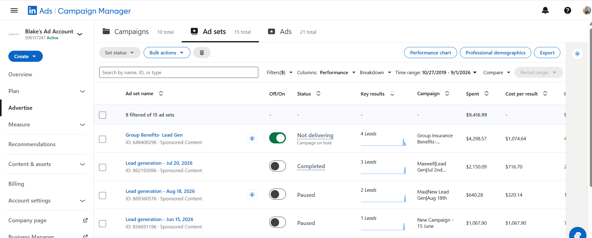

Insurance · United States
Maxwell Agency lead generation
A focused LinkedIn campaign for a specialist insurance offer, using professional audience targeting and lead-generation creative.
LinkedIn AdsAudience targetingLead formsOptimization
- Structured audiences around relevant professional profiles.
- Aligned ad messaging with a clear specialist insurance offer.
- Monitored campaign performance and refined delivery.
10Total leads
USMarket
B2BCampaign type